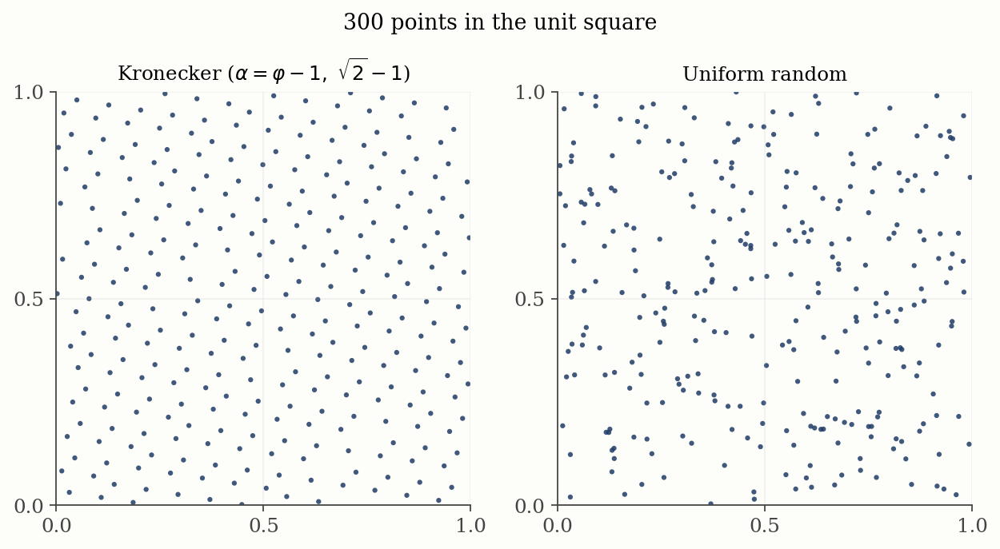
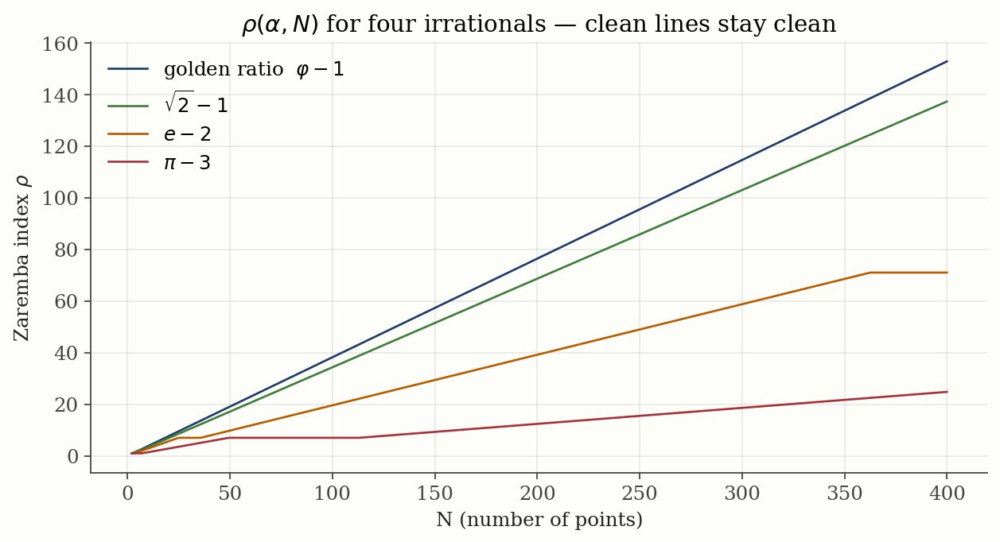
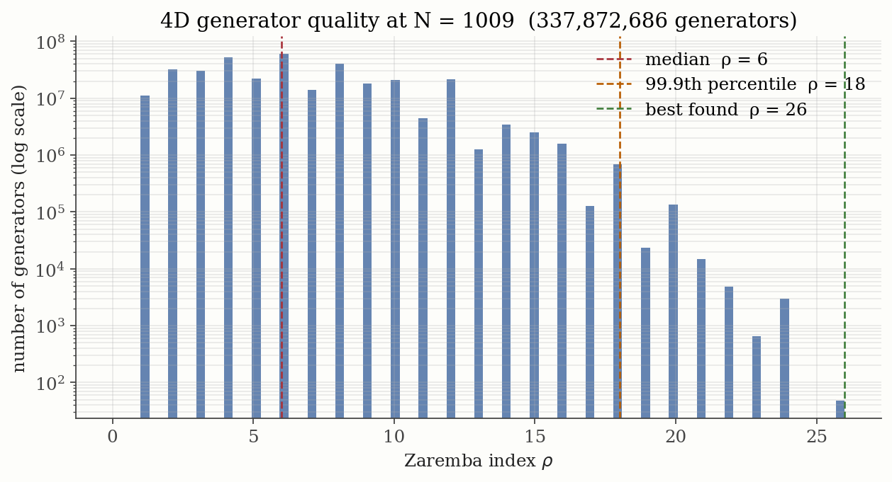

Spreading Points Evenly
A research walkthrough about Kronecker sequences, Diophantine approximation, rank-1 lattices, and the Zaremba index — with the math kept readable.
 Research project under Prof. Christiane Lemieux.
Research project under Prof. Christiane Lemieux.
A research walkthrough about Kronecker sequences, Diophantine approximation, rank-1 lattices, and the Zaremba index — with the math kept readable.
Research project under Prof. Christiane Lemieux.
How do you scatter dots in a box as evenly as possible?
Imagine I hand you a square and ask you to mark a hundred points inside it. The points should cover the square evenly — no big empty regions, no clusters. Easy enough by eye. But what if I ask you to do it in a cube? In a 5-dimensional cube? With a hundred million points? Now your eye is useless and you need a recipe.
This is not a toy puzzle. Whenever a computer estimates the area under a curve, simulates a physical system, prices an option, or renders light bouncing in a video game, it secretly relies on a cloud of well-spread points. The more evenly the points cover the space, the more accurate the answer. So the question becomes: what is the best recipe for spreading points?
Random points look scattered, but look closely and you'll find clumps and gaps. Random isn't even — random is random. A 200-year-old idea behind Kronecker sequences uses a very simple recipe to fill a square with almost eerie regularity. This sits inside the modern theory of quasi-Monte Carlo: deterministic point sets designed to beat ordinary Monte Carlo by reducing discrepancy.
My project studies this through the language of lattice rules. The central question is not just "do the points look nice?" but: which integer frequency vectors can the point set accidentally align with? Those bad alignments are measured by the Zaremba index.

To make a Kronecker sequence in 1D, pick an irrational number \(\alpha\) and take fractional parts:
So if \(\alpha = 0.618\ldots\) (the golden ratio minus one), the points are at 0.618, 0.236, 0.854, 0.472, 0.090, 0.708, … and so on. They march around the unit interval, never repeating, never landing on top of each other, gradually filling every gap.
For the lattice-rule version used in the computations, the actual point set is
This is a Kronecker lattice. If we replace each irrational \(\alpha_j\) by an integer generator \(g_j/N\), it becomes the classical rank-1 lattice rule studied by Korobov, Hlawka, Niederreiter, Sloan, Joe, and Zaremba.
This sounds odd. Aren't all irrational numbers equally irrational? Mathematically: no. The right language is Diophantine approximation. A number \(\alpha\) is called badly approximable if there is a constant \(c(\alpha) > 0\) such that
Here \(\|x\|\) means distance from \(x\) to the nearest integer. This says: no denominator \(q\) gives an unusually good rational approximation \(p/q \approx \alpha\).
Continued fractions make this visible. The golden ratio has continued fraction \([1;1,1,1,\ldots]\), so its partial quotients are as small as possible. \(\sqrt{2}\) has \([1;2,2,2,\ldots]\). Both are badly approximable. Numbers like \(e\) and \(\pi\) are irrational too, but they have occasional strong rational approximations; \(\pi \approx 22/7\) is the famous small example. Those approximations create temporary lattice alignments, and the Zaremba index detects them.
Eyeballing evenness doesn't scale. We need a number. The number I used is the Zaremba index, written \(\rho\). For a rank-1 lattice with generator \(g = (1,g_1,\ldots,g_{d-1})\) modulo \(N\), define the dual lattice
The bad vectors are the nonzero \(h\) in this dual lattice. Each \(h\) represents an integer-frequency wave that is invisible to the point set. The score is
Large \(\rho\) means the first invisible wave has high hyperbolic frequency, so the lattice avoids simple alignments.
So the entire research project comes down to one question: given a dimension \(d\) and a number of points \(N\), which generators \(\alpha\) make \(\rho\) as big as possible — and how big can \(\rho\) even get?
The codebase was built in layers instead of starting with the fastest version. That was deliberate. The main risk in this project was not just speed; it was accidentally optimizing the wrong mathematical object. So I first wrote slow, obvious versions whose only job was correctness, then used those as test oracles for the faster versions.
The first implementation in math_help.py enumerates candidate integer vectors directly and computes the product score \(r(h)\). It is too slow for serious experiments, but it is transparent: for small \(N\) and small search radius \(M\), there is almost no algorithmic cleverness hiding a bug.
This reference implementation answered the basic question: "When the fast code says the minimum is this vector, can I independently verify that no smaller vector exists?" That mattered because a wrong \(\rho\) value can look plausible in a plot. The brute-force version gave me a ground truth for small cases.
The next design decision was to avoid searching all pairs \((k_1,k_2)\) when only a few can possibly matter. In 2D, for each fixed \(k_1\), the best \(k_2\) must be close to \(\alpha k_1\). So instead of checking every \(k_2\), the NumPy version computes
and only tests a tiny window around that nearest integer. This turns a square search into a near-linear one. The reason this is valid is geometric: if \(k_2\) is far from \(\alpha k_1\), then \(N|k_2-\alpha k_1|\) is already too large to beat the current best product.
For higher dimensions, nearest-integer tricks alone are not enough. I moved to a branch-and-bound design: keep the best \(\rho\) found so far, then stop exploring a branch as soon as its partial product already exceeds that value. The key invariant is simple:
This is the main design principle behind the faster 3D, 4D, and 5D code. It is still an exact search; it just refuses to spend time on branches that are mathematically impossible winners.
The notebooks handle exploration, plots, and interpretation. The reusable kernels live in files like math_help.py, fast_comp.py, and fast_comp_C.c. I made that split because the project had two different modes of work: interactive research, where I wanted to try ideas quickly, and production-style computation, where I needed repeatable runs over millions of generators.
That separation also made it easier to compare implementations. If Python, NumPy, Numba, and C all agree on the same small cases, then the faster code has earned trust before being used on large datasets.
Before you can study a thing, you must measure it. I implemented the Zaremba-index search three ways: a brute-force dual-lattice enumeration, a vectorized nearest-integer search, and the branch-and-bound style used by Lyness and Sørevik, "A search program for finding optimal integration lattices" (1991). I checked all three against trusted test cases: the golden ratio, \(\sqrt{2}\), \(e\), and small \(N\) where brute force is still exact.
The computation is a shortest-vector problem, but not in the Euclidean norm. It minimizes the hyperbolic product
which is why standard lattice intuition only partly applies. Along the way I noticed the algorithms have a search bound \(M\), conventionally set to \(N\). In practice, almost every interesting generator gets the right answer with \(M = N/4\) — a 4× speedup that compounded across billions of later computations.
The important engineering decision was to keep the return value richer than just \(\rho\). The functions also return the minimizing integer vector, the corresponding dual vector, or both. That made debugging possible: when a plot jumped, I could ask whether the jump came from the value of \(\rho\) itself or from a new worst vector taking over.
I also treated every speedup as suspicious until it matched the slow version. The workflow was:
This gave the project a testing ladder: slow and obvious for truth, fast and specialized for scale.
I ran \(\rho\) for \(N\) from 1 to 1000, with several famous \(\alpha\) values. Technically this is the 2D lattice generated by \((n/N,\{n\alpha\})\), but there is only one irrational parameter, so it is the cleanest place to see the number theory.
Inside the calculator, \(\rho\) is the smallest product \(r(h)\) among the dual vectors \(h\). For the golden ratio, the worst vector is governed by the Fibonacci convergents. For \(e\) and \(\pi\), the minimizing vector jumps around, which is exactly why \(\rho\) jumps.

When \(N\) happens to be a Fibonacci number \((1,2,3,5,8,13,21,34,\ldots)\), the golden ratio's \(\rho\) exhibits a phase transition — a sudden jump. This is not numerology. The convergents of \(\varphi\) are ratios of Fibonacci numbers, and continued-fraction convergents are exactly the fractions that control \(\|q\alpha\|\).
That connects the experiment to classical results on low-discrepancy Kronecker sequences: bounded continued-fraction coefficients imply good distribution. In a modern formulation, Takashi Goda's 2024 note proves that the one-dimensional Kronecker sequence is quasi-uniform exactly when \(\alpha\) is badly approximable, using the three-gap theorem.
The golden ratio's higher-dimensional cousin is often taken to be the Plastic Number \(\psi \approx 1.3247\ldots\), the real root of
It gives a natural "noble" generator through powers such as \((\psi^{-1},\psi^{-2},\psi^{-3},\ldots)\). I used these algebraic generators to build 3D, 4D, and 5D Kronecker sequences and compare them with large random samples of rank-1 generators.
I also tested the classical existence theorem behind the subject. Zaremba proved that for every \(d\) and \(N\) there exists a rank-1 generator with
The later paper Dick, Pillichshammer, Suzuki, Ullrich, and Yoshiki, "Lattice-based integration algorithms: Kronecker sequences and rank-1 lattices" (2018) uses this kind of Zaremba-index bound to control worst-case integration error in smooth function spaces.
I ran tens of thousands of random 3D generators and counted how many actually exceeded this scale.
99.98% of sampled generators easily exceeded the \(N/(\log N)^2\) scale. The bound is mathematically important as an existence guarantee, but too weak to separate good generators from excellent ones.
For each \(N\) from 23 to 1601, I computed \(\rho\) for thousands of 3D generators and looked at the full distribution. Three findings:
Here I also made a data-design choice: store full distributions, not just the best generator. The best value is exciting, but it hides the shape of the search problem. A distribution tells you whether good generators are common, rare, or almost nonexistent. That is why the code records \(\rho\) values with weights and percentiles, then plots the histogram on a log scale.
I used symmetry reduction whenever possible. Many generators are equivalent under coordinate permutations, so enumerating every raw tuple wastes time and overcounts the same mathematical behavior. I also filter out generator coordinates that are not coprime to \(N\), because those coordinates create degenerate lattice structure. For example, in 4D I can restrict to ordered generator tuples such as
and then attach the correct permutation multiplicity as a weight. This keeps the distribution honest while avoiding repeated computation.

Python could handle 3D up to \(N \approx 1600\). For higher dimensions I needed new machinery. The work to compute \(\rho\) grows roughly as \(N^d\). At 5D and \(N = 1000\), that's a quadrillion operations per generator times tens of thousands of generators. So I rebuilt the core in three steps:
Numba compiles Python to native machine code at runtime. With a careful branch-and-bound search, the 4D inner loop ran ~200× faster than vanilla Python. \(N\) up to 2000 became reachable.
The main Numba design decision was to avoid Python objects inside the hot loop. Lists, dictionaries, dynamic tuples, and Python-level recursion are convenient, but they prevent the compiler from producing tight machine code. So the 4D kernel uses fixed-size numeric arrays, explicit loops, and simple integer arithmetic wherever possible.
The kernel also starts with cheap special cases. First it checks whether \(\rho = 1\), because that is the worst possible score and can be detected from very small coordinate patterns. Then it computes simple one-coordinate bounds before entering the full nested search. These early exits are not just micro-optimizations; they shrink the initial search box for many bad or mediocre generators.
I also moved expensive work out of the inner loop. Generator construction, symmetry bookkeeping, plotting, and file output happen outside the kernel. The kernel has one job: given \(N\) and a generator, return the exact \(\rho\). That made performance easier to reason about and made bugs easier to isolate.
Before searching, I run the Lenstra-Lenstra-Lovász lattice basis reduction algorithm (LLL, 1982) to find a "nicer" basis for the dual lattice — one where short candidate vectors appear earlier. LLL does not solve the Zaremba-index problem by itself, because \(\rho\) uses a product norm rather than Euclidean length. But it makes branch-and-bound pruning much sharper.
The reason for using LLL is practical: branch-and-bound is only powerful after it has a good upper bound. If the first candidate is terrible, the search box stays huge. LLL tends to reveal short dual vectors early, giving the algorithm a small initial \(\rho_{\text{best}}\). Once that happens, most later branches fail the product bound quickly.
I kept LLL as preprocessing rather than making it the whole solver because it optimizes a different norm. Euclidean shortness and Zaremba shortness are related, but not identical. A vector can be short in Euclidean length while still having a large coordinate product, and vice versa. So LLL is used as a guide, not as a replacement for exact enumeration.
For 5D even Numba wasn't enough. I rewrote the kernel in C, parallelized across all CPU cores with OpenMP, and used streaming I/O so memory stays bounded. The search is still exact: every candidate dual vector inside the active branch-and-bound region is considered, and the current best \(\rho\) shrinks the remaining box. The biggest 5D dataset (\(N = 1009\)) is 18 GB.
C was the right tool at this stage because the bottleneck had become extremely low-level: nested loops, integer modular arithmetic, branch pruning, and writing a large number of records. I did not need new abstractions; I needed predictable memory layout and control over every loop.
OpenMP parallelization was natural because different generators can be scored independently. That means the computation is embarrassingly parallel: one thread's generator does not affect another thread's result. The only shared concerns are progress reporting and output, so I designed the 5D run around chunked work and streaming writes instead of trying to keep the whole dataset in memory.
The output format was another design decision. In the 4D Python pipeline, I save compressed .npz arrays containing both rhos and weights, because that format loads directly into NumPy for percentiles and plotting. In the 5D C pipeline, I stream results to CSV so the run never needs to hold the full dataset in memory. That choice favors robustness during the expensive computation; later analysis can convert or compress the output if needed.
Quasi-Monte Carlo sequences power a remarkable amount of modern computation: physics simulations, financial Monte Carlo, light transport in 3D rendering, machine-learning sample generation. In the Koksma-Hlawka picture, integration error is controlled by discrepancy; in lattice-rule theory, discrepancy and worst-case error are controlled by the dual lattice. The Zaremba index is one compact way to ask: how early does the dual lattice contain a dangerous low-frequency vector?
What did this research add?
The story arc: an old, simple idea (Kronecker's sequence), measured by a 70-year-old quality score (Zaremba's index), studied in the high-dimensional regime that modern applications actually live in.
If you've read this far without a math background and you now have a rough mental picture of what was done and why — that was the entire goal.